import CairoMakie as Mke2 Scientific visualization
The visualization ecosystem in Julia is evolving very quickly. Among the various visualization projects, Makie.jl by Danisch and Krumbiegel (2021) is the most advanced for scientific visualization.
Makie.jl is currently organized in backend modules:
- GLMakie.jl is the preferred backend for interactive high-performance visualization.
- WGLMakie.jl is the preferred backend for interactive visualization on the web browser.
- CairoMakie.jl is the preferred backend for publication-quality static visualization.
In this book, we use CairoMakie.jl:
Note
We import the backend as Mke to avoid polluting the Julia session with names from the visualization stack.
Makie.jl provides a plot recipe system developed after Plots.jl by Breloff (2023), which enables automatic visualization of custom Julia types. The GeoStats.jl framework is integrated with this system, and provides powerful visualization functions for geospatial data.
Julia will automatically trigger the compilation of these visualization functions whenever GeoStats.jl and Makie.jl are loaded in the same session:
using GeoStats2.1 viz/viz!
The main visualization function that the framework provides is the viz/viz! function. The viz function creates a scene and displays geometries within a geospatial domain. On the other hand, the viz! function adds more geometries to an existing scene.
Let’s create a small geotable over a Cartesian grid for illustration purposes:
img = georef((A=rand(10, 10), B=rand(10, 10)))| A | B | geometry |
|---|---|---|
| Continuous | Continuous | Quadrangle |
| [NoUnits] | [NoUnits] | |
| 0.451948 | 0.350616 | Quadrangle((0.0, 0.0), ..., (0.0, 1.0)) |
| 0.722537 | 0.52054 | Quadrangle((1.0, 0.0), ..., (1.0, 1.0)) |
| 0.327298 | 0.378095 | Quadrangle((2.0, 0.0), ..., (2.0, 1.0)) |
| 0.507209 | 0.595313 | Quadrangle((3.0, 0.0), ..., (3.0, 1.0)) |
| 0.388524 | 0.252481 | Quadrangle((4.0, 0.0), ..., (4.0, 1.0)) |
| 0.0346288 | 0.434974 | Quadrangle((5.0, 0.0), ..., (5.0, 1.0)) |
| 0.0114912 | 0.0887892 | Quadrangle((6.0, 0.0), ..., (6.0, 1.0)) |
| 0.336276 | 0.105118 | Quadrangle((7.0, 0.0), ..., (7.0, 1.0)) |
| 0.882474 | 0.937455 | Quadrangle((8.0, 0.0), ..., (8.0, 1.0)) |
| 0.675174 | 0.266746 | Quadrangle((9.0, 0.0), ..., (9.0, 1.0)) |
| ⋮ | ⋮ | ⋮ |
Note
The georef function will create a CartesianGrid starting at the origin whenever the domain is omitted. The size of the grid is taken as the size of the first array in the named tuple:
img.geometry10×10 CartesianGrid{2,Float64}
minimum: Point(0.0, 0.0)
maximum: Point(10.0, 10.0)
spacing: (1.0, 1.0)
Tip for all users
To create a named tuple with a single key in Julia, we need an extra comma after the key/value pair:
(A=rand(10, 10),)(A = [0.80940068744871 0.04037469820598738 … 0.741738391775617 0.6750694235370285; 0.33613999533848915 0.24652494715835493 … 0.8263263822735389 0.22407180981486663; … ; 0.10757341844247459 0.8678086194680892 … 0.6464321103027318 0.3810099572364346; 0.7295886085298984 0.886315330885909 … 0.9355161451387867 0.8969188851219723],)or a semicolon before the key/value pair:
(; A=rand(10, 10))(A = [0.7292784482742807 0.529291456015488 … 0.9801594015807065 0.6119997863786732; 0.3376758304671651 0.5462669682298089 … 0.14605621771020083 0.7033893054634074; … ; 0.5896687368058697 0.5286696484076171 … 0.34664138195754135 0.5448663458128941; 0.9178365148194425 0.5121227398296836 … 0.5909959903755333 0.5747834812809537],)By default, all geometries are displayed with a single color:
viz(img.geometry)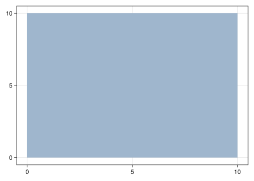
We can pass any vector of Colors.jl or numbers (automatically converted to colors) to the function via the color option. It is common to pass colors from another column of the geotable:
viz(img.geometry, color = img.A)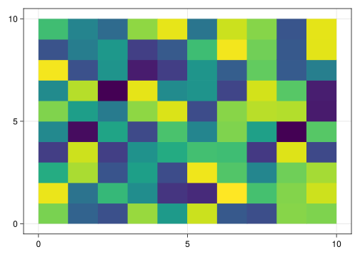
but any vector with the same length can be passed:
viz(img.geometry, color = 1:length(img.A))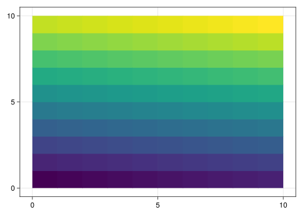
Note
Any vector of Julia objects implementing the ascolors function can be passed to the color option.
The alpha option can be used to control the transparency of each geometry in the domain:
viz(img.geometry, color = img.B, alpha = rand(length(img.B)))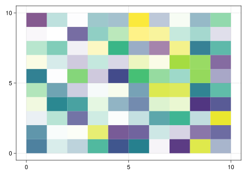
Other aesthetic options are available in the official documentation. To really see the benefits of the framework, let’s load data from a GeoJSON file and visualize it:
using GeoIO
gis = GeoIO.load("data/geotable.geojson")
viz(gis.geometry, color = 1:4)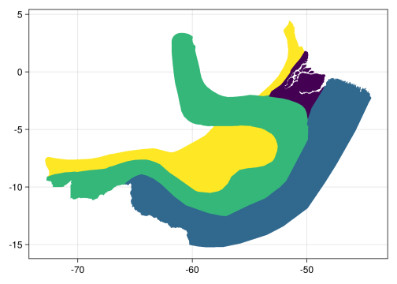
Note
The “data” folder is stored on GitHub. Check the Preface for download instructions.
As already mentioned, the viz! function can be used to add more geometries to an existing scene. We can create a scene with the geometries from the first geotable (“raster data”), and then add the geometries from the second geotable (“vector data”):
viz(img.geometry, color = 1:100)
viz!(gis.geometry, color = 1:4)
# display current figure
Mke.current_figure()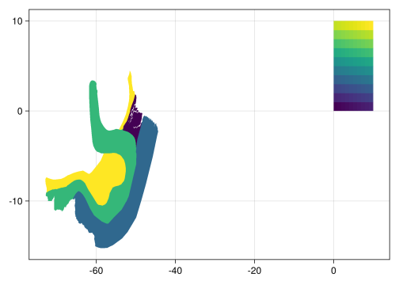
Let’s add an additional set of points:
pts = [Point(-20, -10), Point(-20, 0), Point(-40, 10)]
viz!(pts, color = 1:3)
Mke.current_figure()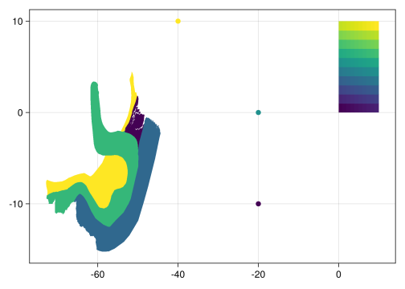
And a set of line segments to conclude the example:
seg = [Segment((-40, -10), (0, 0)), Segment((-40, 0), (-20, 10))]
viz!(seg, color = 1:2)
Mke.current_figure()
Tip for all users
Makie.jl can set the aspect ratio of the axis after the visualization is created. The following code can be used to adjust the aspect ratio for the data in the scene:
ax = Mke.current_axis()
ax.aspect = Mke.DataAspect()
Mke.current_figure()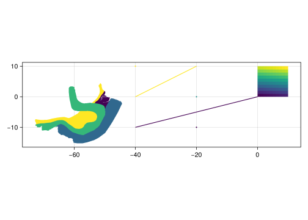
Tip for advanced users
Makie.jl dispatches the viz and viz! functions whenever it encounters a geospatial domain, a vector of geometries or a single geometry from Meshes.jl. This means that you can replace viz with Mke.plot and viz! with Mke.plot! in scripts and the result will be the same.
Tip for advanced users
In the case of Mesh domains, it is also possible to specify a color for each vertex of the mesh. In this case, the viz and viz! functions fill in the domain with using the interpolation routine from the graphics library:
grid = CartesianGrid(10, 10)
fig = Mke.Figure()
viz(fig[1,1], grid, color = 1:nelements(grid))
viz(fig[1,2], grid, color = 1:nvertices(grid))
fig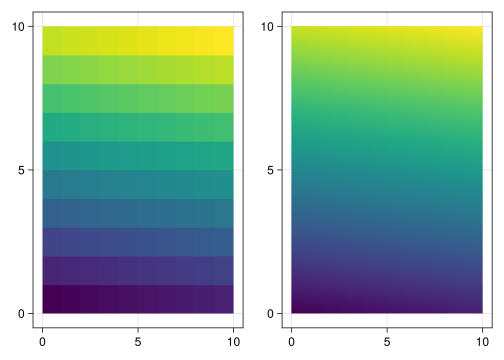
2.2 viewer
As geospatial data scientists we are often interested in quick inspection of intermediate results from multivariate geostatistical analysis. Visualizing all the variables manually with viz/viz! can be very time consuming. To address this issue, the framework provides a basic viewer that displays all variables stored in a geotable:
geotable = georef((A=rand(1000), B=rand(1000)), rand(3, 1000))
viewer(geotable)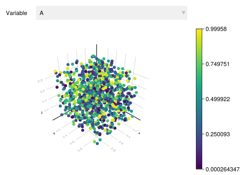
Note
The georef function will create a PointSet whenever its second argument is a Matrix of coordinates. In this case, the points are represented in the columns of the matrix:
geotable.geometry1000 PointSet{3,Float64}
├─ Point(0.5098695583147861, 0.9689356156717607, 0.4923685566408098)
├─ Point(0.3527071632203008, 0.5963751180978842, 0.9689643976947485)
├─ Point(0.3793615597844785, 0.6056386969854388, 0.7355034554993072)
├─ Point(0.1051495654271195, 0.08103216677118141, 0.4242891039691927)
├─ Point(0.15170159347085144, 0.1848551923385482, 0.5518657737960916)
⋮
├─ Point(0.19714526816283184, 0.7951622141004654, 0.06846117133265839)
├─ Point(0.3933690371599242, 0.8082886628114352, 0.20026540730826448)
├─ Point(0.7367070163071857, 0.5589794865678648, 0.2936644320662495)
├─ Point(0.1720217946497289, 0.5987505110648228, 0.5009413979945512)
└─ Point(0.7196055081505323, 0.09049543625687984, 0.9887756650624296)It adds interactive elements to the scene, including a menu to select the variable used as color, and a color bar that automatically updates upon menu selection. The viewer will be particularly useful when we start to work with geospatial transforms in Part II of the book. The pipe operator (|>) in Julia will be preferred for reasons that will become clearer later:
geotable = georef((A=rand(1000), B=rand(1000)), CartesianGrid(10, 10, 10))
geotable |> viewer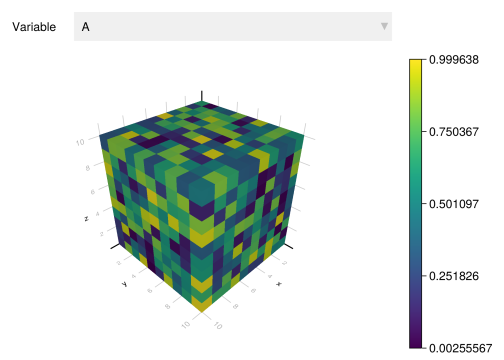
Note
The viz/viz! and the viewer automatically select color schemes for variables based on data science traits from the DataScienceTraits.jl module. Additionally, the viewer recognizes units from the Unitful.jl module:
geotable = georef((; A=[1,2,3,4]u"m"), CartesianGrid(2, 2))
geotable |> viewer
We are now equipped with a set of visualization functions that can really improve the speed at which we explore and analyze geospatial data. These functions provide a consistent set of aesthetic options that we will cover in more detail with future examples.
Before we start learning the advanced features of the framework, we would like to say a few words about integration with existing GIS technology.